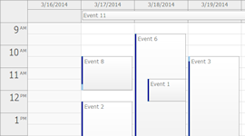
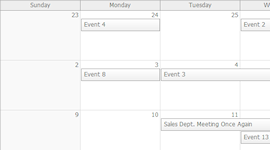
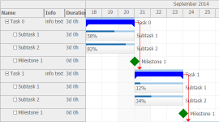

JavaScript Event Calendar
Outlook-like day/week view. Customizable columns.

JavaScript Monthly Event Calendar
Outlook-like month view.
JavaScript Scheduler
A time line for multiple resources.

JavaScript Gantt
Gantt chart displays a time line with one task per row.
JavaScript Kanban
Kanban displays tasks organized by columns (phases).